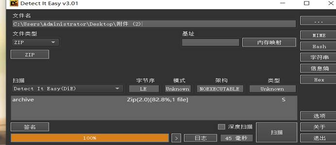
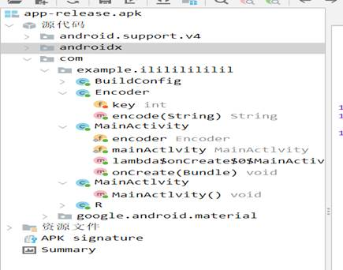
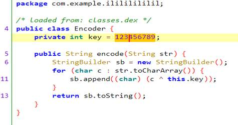
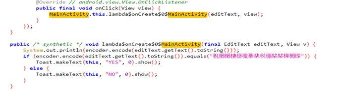
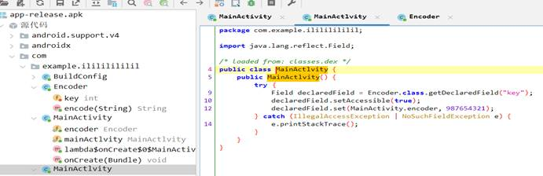
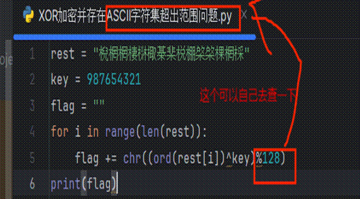
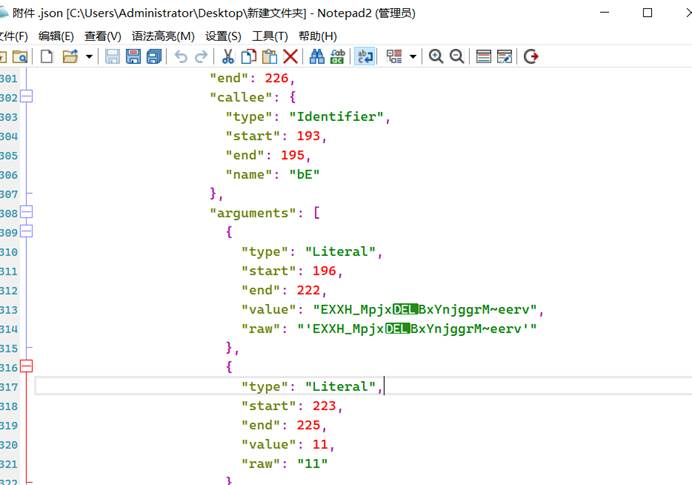
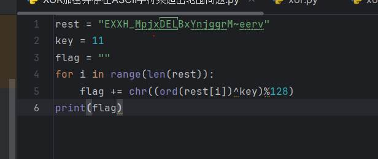
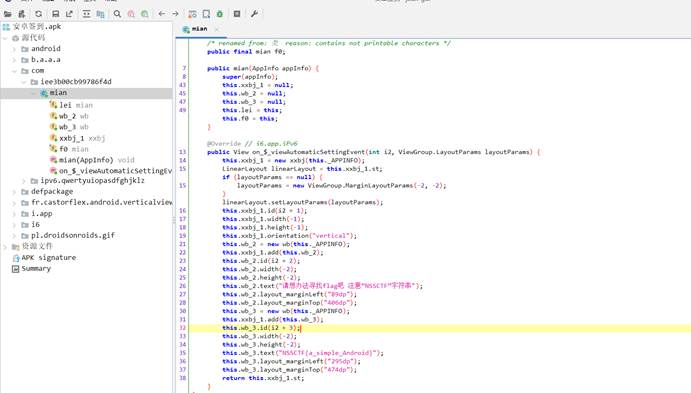

一、工具
常用工具：JEB、Jadx 和 Die。
JEB / Jadx 具体怎么好用，目前谁也说不准谁最好，有的人觉得 JEB 好用些，有的人觉得 Jadx 也好用。注意：弄这两个必须熟悉 Java 语言。
Die 是目前我见过的，识别最准的查壳信息工具。
二、XOR 题 — [SWPUCTF 2021 新生赛] easyapp
步骤一：查信息
压缩文件把文件扩展名改为 .Zip 取出内部文件。

步骤二：反编译看
直接拿 Jadx 打开。

这么简单的 JAVA 逆向去找关键代码，一般通过文件扩展名就可以判断出代码的撰写类型，一般不太会弄混 .so 和 .dex 文件，jar 包和 apk 包直接展开就好了，其余的类型可以看代码，例如：encoder 和 mainXXX 什么的。
关键计算：



关键计算，第二张图应该是加密部分，第一张应该是对 key 的处理。根据分析 key = 123456789，在图中做了颠倒处理，所以实际 Key = 987654321。
步骤三：逆着写脚本

三、.json 文件题 — [SWPUCTF 2021 新生赛] astJS cjian
步骤一：使用 npm 和 escodegen 还原，生成 js 代码，运行即可。如果没有 node 环境就去网上找在线工具，或者直接看 .json 文件。

步骤二：脚本。

四、水题
步骤一：了解文件结构，一般直接在 com 文件夹找到对应的目录，找 main 点开。

直接看，签到题。
五、总结
Java 题目还是偏简单的，不会太难。JAVA 的代码风格有差异，习惯看什么就比较熟悉什么，当然主要还是要熟悉 JAVA 基础。建议还是多刷一些简单的题，加强工具的使用，也增加视野的广度，遇到问题也可以尝试一下。
好了，就本期的 Java 逆向学习，水一篇帖子，懂的人保证简单的题都能抓就行。